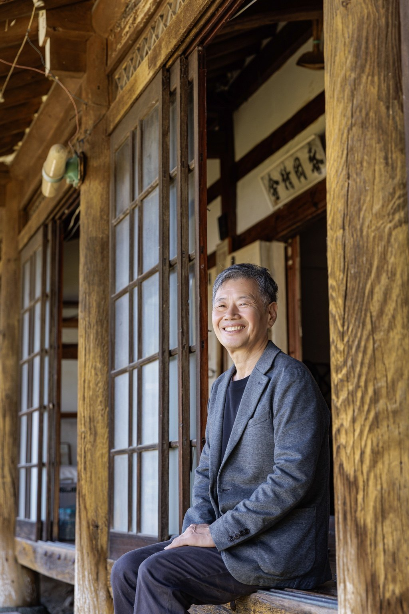

보름을 머문 이유 — 1898년, 함평의 은신
함평 이동범가, 128년의 인연 | 제2편
지난 1편에서는 『백범일지』에 등장하는 ‘함평 이 진사’와 저희 고조부 석암 이동범 선생의 인연을 소개했습니다.
이번에는 조금 더 오래전으로 돌아가 보려 합니다. 1898년, 인천감옥을 탈옥한 청년 김구 선생은 전남 함평의 어느 집에 머물렀습니다. 처음에는 하룻밤만 묵을 생각이었습니다. 그런데 그 하룻밤이 보름으로 이어졌습니다. 그 집에는 무엇이 있었던 것일까요?
1. 쫓기던 청년
1898년의 김구 선생은 훗날 우리가 기억하게 되는 대한민국 임시정부의 지도자가 아니었습니다. 인천감옥에서 탈옥한 뒤 몸을 숨겨야 했던 청년이었습니다. 김구 선생은 삼남지방을 유랑하던 중 전남 함평에 이르렀고, 이곳에서 ‘이 진사’의 집을 찾았습니다.
『백범일지』에 등장하는 그 집은 1편에서 소개한 저희 고조부 석암 이동범 선생의 집으로 전해 내려오는 곳입니다.
다만 『백범일지』의 ‘이 진사’라는 기록과 이동범 선생의 신원을 연결하는 문제는 당대 자료, 후대 조사기록, 집안 전승을 함께 살펴보아야 합니다. 역사적 사실을 확인하는 일은 바로 이러한 구분에서 시작된다고 생각합니다.
2. 하룻밤이 보름으로
『백범일지』에서 특히 인상적인 부분은 집안의 가풍에 대한 기록입니다. 김구 선생은 처음부터 오래 머물려고 찾아간 것이 아니었습니다.
그러나 주인과 손님을 차별 없이 대접하는 모습, 집안사람들이 손님을 정성스럽게 맞이하는 모습을 보면서 깊은 감명을 받으셨습니다. 김구 선생은 이러한 분위기가 집주인의 인격에서 비롯된 것이라고 평가하셨습니다.
결국 하룻밤을 지낸 뒤 떠나려던 김구 선생을 집주인이 만류했고, 그 정성에 감복해 약 보름 동안 머물게 되었습니다. 저는 이 대목을 읽을 때마다 생각하게 됩니다. 한 사람이 다른 사람에게 베푼 배려가 얼마나 오래 기억될 수 있는가. 그리고 그것이 한 세기가 넘도록 후손들에게 전해질 수 있는가.
3. 육모정·토굴·다락
김구 선생의 함평 체류를 설명할 때 빠지지 않는 공간이 있습니다. 육모정, 토굴, 그리고 안채의 다락방입니다. 이 공간들은 『백범일지』의 관련 서술과 집안의 전승을 함께 검토해야 하는 대상입니다.
가족에게 전해 내려온 이야기에 따르면, 김구 선생은 당시 외부의 눈을 피해 머무를 공간이 필요했고 집안에서도 이를 배려했다고 합니다. 하지만 여기서 한 가지 중요한 구분이 필요합니다.
1898년 당시 은신에 이용되었다고 전해지는 공간과 현재 남아 있는 건축물은 반드시 동일한 것은 아닙니다. 육모정의 원형은 현존하지 않는 것으로 알려져 있고, 토굴의 정확한 위치와 존속 여부, 안채 및 다락의 건축연혁 역시 추가 조사가 필요합니다.
현재 남아 있는 종가 본채가 이 역사를 추적하는 데 어떤 단서가 되는지는 4편에서 따로 살펴봅니다.

4. 아버지의 기억
1편에서 소개한 백범김구기념관 인터뷰에서도 아버지는 이 집에 얽힌 이야기를 들려주셨습니다.

저 역시 그 이야기를 듣고 자랐지만, 이번에는 기록으로 확인할 수 있는 부분과 가족의 기억으로 남아 있는 부분을 더욱 꼼꼼하게 살펴보게 되었습니다.
신문은 인물의 생애를, 족보는 가계를, 건축 조사는 건물의 연혁을 설명하지만, 어느 하나만으로 모든 사실이 증명되지는 않습니다.

5. 보름의 의미
김구 선생은 훗날 우리 근현대사의 중요한 인물이 되셨습니다. 그러나 1898년 함평의 이동범가에서 머무르던 시절, 그분은 위험을 피해 길을 떠돌던 청년이었습니다.
그 청년에게 하룻밤의 숙식을 제공하고, 떠나려는 이를 만류하여 더 머무르게 했던 환대가 『백범일지』에 남았습니다. 저희 집안이 오늘날까지 이 이야기를 소중히 간직해 온 이유도 여기에 있을 것입니다.
역사는 위대한 인물의 행적만으로 이루어지지 않습니다. 그 인물이 어려운 시기를 지날 때 곁에 있었던 사람들의 선택 역시 역사의 일부입니다. 저희는 앞으로도 그 선택의 흔적을 자료와 공간 속에서 찾아가려 합니다.
다음 3편에서는 거의 반세기가 지난 1946년, 김구 선생이 옛 은인의 집을 다시 찾으려 하셨던 이야기를 소개하겠습니다.
백범김구기념관 공식 인터뷰
이어지는 글 · 지난 글
- 제3편(다음): 1946년 재회와 光明 — 김구가 다시 찾은 인연
- 제1편: ‘이 진사’는 누구였나 — 백범 김구와 함평 이동범가
주요 참고자료
[1] 『백범일지』, 1898년 함평 체류 관련 기록.
[2] 『매일신보』, 1917년 7월 8일, 이동범 인물기사.
[3] 『함평이씨대동보』.
[4] 이동범가 소장자료 및 후손 구술.
자료에 직접 기록된 사실과 가족 전승은 구분하여 서술하였으며, 건축물의 정확한 연혁은 추가 조사 대상입니다.